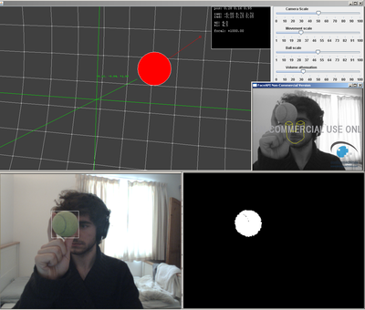

-
lsys
responsive l-systems in javascript -
mercury
too many chrome tabs open? me too. mercury is a chrome plugin that finds the one you're looking for instantly -
js-quickload
playing with js libraries online is a pain in the butt. js-quickload to the rescue: hassle-free library-loading sandbox. paste and go -
arduino fun
i bought an arduino. here's the first fruit of my exploits -

js1k rain
my entry to the 2010 js1k competition - make something cool in under 1024 bytes of code -

H.T.A.P.E
my university masters project - Head Tracked Audio Processing Engine: 3D sound delivered over headphones using a webcam for head-pose estimation -

tennis-ball tracker
super-fast tennis ball tracking in OpenCV. developed as an extra feature for HTAPE, allowing physical placement of virtual sound sources in the real world. i.e. - your tennis ball is now a loudspeaker -
pinelo
a canvas based painting app, developed jointly with Alex Michael, just because. -
art
a collection of oddities from my younger years. one day I wish to return to 3D rendering -
neuton
neuton is a tiny javascript physics engine, developed to learn-me-a-physics -
wibble
neuton in action. not terribly exciting, but ... wibble -
3D engine
likewise, a tiny javascript 3D engine, developed to learn-me-a-3D